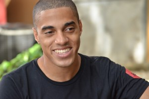

|  |
Joanbelk García AlvaradoEnthusiast of the web 3.0 and web development. BSc, Mechatronic's Engineering Santo Domingo, Dominican Republic.I have a bachelor’s degree in mechatronics engineering from the Santo Domingo Institute of Technology (INTEC). I began my studies in Santo Domingo thanks to a scholarship that its initiative is to populate the country with notable creative individuals and students who have obtained high grades during high school within the PIES program (Intec’s program for outstanding students). From an early age, I grew up interested in technology and I have always been fascinated by great figures of science, specifically inventors. When I was a child, every year I was trying to invent some new technological device or process before I reached the same age scientist that I admire began creating their own inventions throughout history to follow in their footsteps. In my free time, I like to learn new things that help me to understand many new technologies and recreate them myself following my fantasies and desires to know the truth nature's god creativity and also being capable of pushing the limitations of humanity. I am currently interested in Machine Learning, Data analysis techniques and Quantum Programming. |
Santo Domingo Institute of Technology
Chonnam National University
|
May 2019 – September 2021 |
Automation Engineer I (CSD) Fenwal, Inc., a Fresenius Kabi Company Roles:
|
|
May 2018 – May 2019 |
Automation Engineer Intern (CSD) Fenwal, Inc., a Fresenius Kabi Company Roles:
|
|
PLC ⭐ Python ⭐⭐⭐ CAE/CAM Solidworks ⭐⭐⭐ |
SQL⭐ Javascript⭐ GIT⭐ |